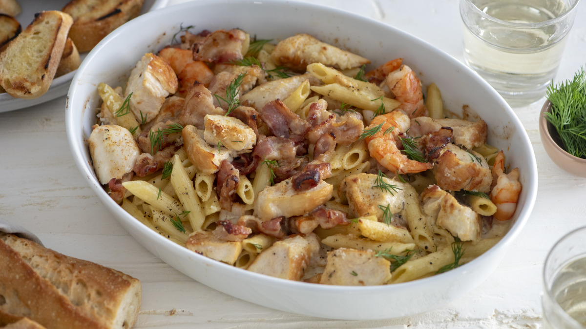

Penne Rustica: A Delicious Italian Dish

Description
Penne Rustica is an Italian-American dish popularized by the Macaroni
Grill chain restaurant. The dish is a creamy concoction of pasta, meat,
and seasoning. If you are a fan of rich Italian-American dishes, this
is a must try.
Ingredients
For the Sauce:
- 2 teaspons of butter
- 2 teaspons of chopper garlic
- 1 teaspoon of dijon mustard
- 1 teaspoon of dill
- 1 teaspoon of chopped rosemary
- 1 cup marsala wine
- 1/4 teaspoon cayenne pepper
- 8 cups of heavy cream
For the Pasta:
- 1 ounce of bacon or pancetta
- 18 peeled shrimp
- 12 ounce of sliced, grilled chicken breasts
- 20 ounces of penne pasta noodles
- 3 teaspoons of chopped pimiento
- 1 teaspoon of chopped shallot
- 1 pinch of salt and pepper
- 1 cup of shredded parmesan cheese
- 1/2 teaspoon of paprika
- 6 sprigs of fresh rosemary
Instructions
- For the Sauce, saute the butter, garlic and rosemary until garlic
begins to brown.
- Add wine and reduce by one-third.
- Add remaining sauce ingredients and set to the side.
- Now, for the pasta side of the recipe, saute bacon or pancetta
until it begins to brown.
- Add butter, shallots and shrimp.
- Cook until shrimp is evenly pink.
- Add chicken, salt, pepper and mix all together.
- Finally, add sauce alongside 1/2 cup of the parmesan cheese.
- Let dish simmer until the sauce thickens.
- Combine the shrimp and chicken with the pasta in a large bowl.
- Top with remaining parmesan cheese, as well as pimientos and paprika.
- Bake at 475 degrees fahrenheit for 10 to 15 minutes.
- garnish with rosemary sprig.